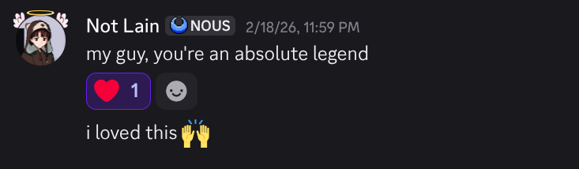
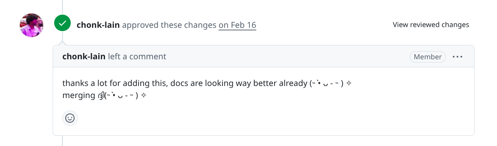
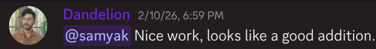

Samyak Bharsakle
I'm Samyak. I write about developer tools and deeptech, and I'm obsessed with agents and the strange new infrastructure being built around them.
Right now I lead growth at Quarq Labs,
an embodied intelligence startup. I walked in as a technical writing intern
and ended up owning the story: taking work that's genuinely hard to explain
and turning it into something people actually want to read.
I grew
@quarqlabs from 100 to
1,000 followers in under a month. Across everything I have around 10k
followers and 150k+ monthly impressions, for whatever that's worth.
I've done a lot of things that didn't work. I led technical clubs. I tried to start a biotech research lab and failed miserably. I ran an AI agency and figured out it wasn't for me. Somewhere in there I realized I'd been doing DevRel/Growth the whole time, building communities, writing, helping people make sense of hard technical things. I just didn't have a word for it yet.
If any of this sounds interesting, just email me, find me on Twitter, or book a call. I like talking to people.
Writing
- Understanding Hermes From An Agentic Memory Perspective
- 98.2% on LongMemEval: An Open-Source Agent That Actually Remembers
- The Map of Robot Learning
- The Tooling Gap in Robot Learning
- Quarq Labs articles index
- Beginner's Guide to uv for Python Package Management
- How to Read a Real Open Source Codebase
Open source contributions
- opentelemetry-python: Overview descriptions for API/SDK docs
- mirascope: E2E tests for multiple image formats
- chonkie: Language support docs for code chunker
- chonkie cookbook: LlamaIndex + Chonkie document Q&A tutorial
- opentelemetry-python: Fix trace_config docstring
Podcast
I run Escape Velocity, a podcast on a small mission to build a deeptech-focused content media house. The ecosystem is evolving fast, and content sits in the middle of all of it. It's the medium we use to exchange ideas, inspiration, and visions of the future India.
The goal is simple: get the ideas of deeptech founders out there. Most talks and pods are by VCs, not the people actually building. I'm trying to bridge that gap, and hoping to inspire the next generation to become the next Bhabha, Sarabhai, and Kalam. New episodes every week.
Projects
- Deep Research Agent: autonomously researches topics across the web.
- SQL Agent: natural language to SQL using LLM reasoning.
- Git from Scratch: rebuilding Git's core in Python to understand it deeply.
Resources I am building
- GenAI from First Principles: LLMs, RAG, and agents from the ground up.
- Backend from Scratch: building backend systems from first principles.
Testimonials


